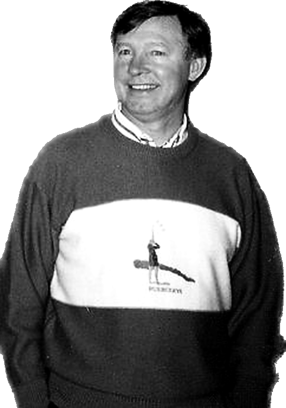
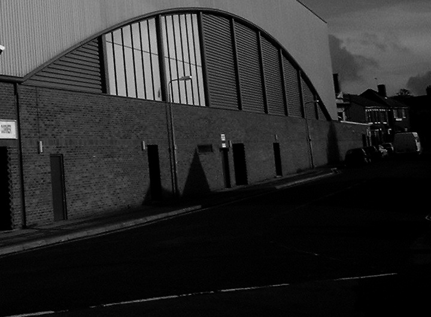

THE DELL · SOUTHAMPTON · 1997 · COLIN SMITH · CC BY-SA 2.0
DESCANSO
SOUTHAMPTON
0
MAN. UNITED
0
MARCADOR: RECREACIÓN

ALEX FERGUSON
ENTRENADOR
ØYVIND VIK · 1992 · DOMINIO PÚBLICO
SEGÚN GARY NEVILLE
E
F P
T O Z
L P E D
P E C F D
TARJETA: RECREACIÓN
EL CLUB TRABAJABA CON
UNA EXPERTA EN VISIÓN

THE DELL · 2000 · DAN KERINS · CC BY 2.5
SOUMUN
1.ª PARTE
3 – 0
2.ª PARTE
0 – 0
MARCADOR: RECREACIÓN
FOTOS: COLIN SMITH (CC BY-SA 2.0), ØYVIND VIK (DOMINIO PÚBLICO), DAN KERINS (CC BY 2.5), VÍA WIKIMEDIA COMMONS MARCADORES, CAMISETAS, VESTUARIO, TARJETA, GRADA Y CAMPO: RECREACIÓN